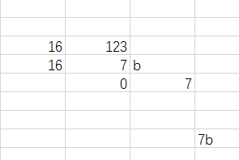

1 十六进制
0-9.a-f
c语言中如何书写十六进制： 0x1ab 0XAB
十进制转十六进制：

十六进制转十进制：

十六进制转二进制：
25a7
0010 0101 1010 0111
二进制转十六进制：
00 01 0010 1011 1101
1 2 b d
十六进制转八进制： 先转二进制再转八进制
2a5b
0 010 101 001 011 011
0 2 5 1 3 3
2 有符号数和无符号数
有符号： 可以表示正数和负数
无符号： 只能表示正数
signed char num; 有符号数num
unsigned char num;无符号数num
有符号： 最高位为符号位，其他位数据位
无符号：全都为数据位

3 数的范围
char： 有符号数和无符号数能够表示数的个数相同，只是表示数的范围不一样
signed char
1 0000000 - 1 1111111 -0 - -127
0 0000000 - 0 1111111 +0 - +127
规定： 将-0 表示成-128
-128 - +127 (-2^7 -> 2^7-1)
unsigned char
00000000 - 1111 1111
0 - 255 (0->2^8-1)
short
signed short (-2^15 -> 2^15-1)
unsigned short (0 -> 2^16-1)
int
signed int (-2^31 -> 2^31-1)
unsigned int(0 -> 2^32-1)
4 原码
数的最原始的二进制码
120
01111000
-23
10010111
-0： 1000 0000
+0： 0000 0000
-1： 1000 0001
1： 0000 0001
1 + -1？
0000 0001
1000 0001
1000 0001
1000 0010 = -2
注意： 负数如果在计算机中用原码存，会导致两个问题 ，负数运算结果不正确，0的状态还有两种
5 反码
正数的反码不变 ，负数的反码（符号位不变，其他位取反）
-0：1111 1111
+0： 0000 0000
-1：1111 1110
1： 0000 0001
1 + -1 = 1111 1111 = -0
如果计算机用反码去存，负数运算结果正确，但是 0的状态还是有两种
6 补码
正数的补码不变，负数的补码等于反码加1
-0：0000 0000
+0： 0000 0000
-1：1111 1111
1： 0000 0001
1+ -1= 0
如果计算机用补码去存，负数运算结果是正确的，0的状态只有一种
7 补码求原码：
-23：
原码： 10010111
反码： 11101000
补码： 11101001
反码： 10010110（补码求原码： 符号位不变，其他位取反）
原码： 10010111（反码求原码： 反码加1）
#define _CRT_SECURE_NO_WARNINGS
#include<stdio.h>
#include<string.h>
#include<stdlib.h>
int main()
{
//赋值时（输入），赋的是十进制，给的是原码。如果赋值给的是八进制或者十六进制给的是补码
//打印时（输出），十进制打印要的是原码，如果是十六进制或八进制打印要的数补码
char num = 129;
//129的原码=反码=补码 = 1000 0001
//但是num是有符号数，最高位为1，计算机认为这是一个负数的补码
// 补码如何求原码？
//补码 1000 0001
//反码：1111 1110
//原码： 1111 1111
printf("num=%d\n",num);//-127
system("pause");
return 0;
}
8 进制的书写和打印
数在计算机存的内容没有改变，打印时只是输出的形式改变而已
#define _CRT_SECURE_NO_WARNINGS
#include<stdio.h>
#include<string.h>
#include<stdlib.h>
int main()
{
int b = 056;
//
printf("a=%o\n", b);
printf("a=%X\n", b);
printf("a=%d\n", b);
system("pause");
return 0;
}
int main02()
{
int a = 123;
int b = 056;
int c = 0xab;
printf("a=%d\n",a);
printf("a=%o\n", b);
printf("a=%X\n", c);
printf("a=%#X\n", c);
system("pause");
return 0;
}
9 整数的输入
scanf（）： 从键盘（标准输入）读取数据
int main()
{
int num = 0;
int sum = 0;
//scanf("%d %d",&num,&sum);
scanf("%d",&num);
printf("%d\n",num);
// printf("%d\n", sum);
system("pause");
return 0;
}
10 sizeof
sizeof 用来测数据类型的大小
int main()
{
char a;
short b;
int c;
long d;
long long e;
//sizeof 用来测数据类型的大小
int len = sizeof(a);
printf("%d\n",len);
printf("%d\n",sizeof(a));
printf("%d\n", sizeof(b));
printf("%d\n", sizeof(c));
printf("long = %d\n", sizeof(d));
printf("%d\n", sizeof(e));
printf("%d\n", sizeof(int));
system("pause");
return 0;
}
12 整数打印格式
%d 有符号打印int
%u 无符号打印int
%hd 有符号打印short
%hu 无符号打印short
%ld 有符号打印long
%lu 无符号打印long
13 字符
单个字符用 单引号''引起来
字符'0' ascii值是48
字符'1' ascii值是49
'A' ascii值是65
'B' ascii值是66
'a' ascii值是97
'b' ascii值是98
因为字符所对应的最大ascii值是127,所以用char类型就可以存得下所有的字符
int main()
{
//char ch = 'a';// ch = 97
//printf("%d\n",ch);
char ch = 'a';
//printf("%d\n",'a');
//printf("%d\n", '\n');
printf("%c\n",ch);//打印ch值(ascii)所对应的字符
system("pause");
return 0;
}
14 字符的输入
//从键盘读取一个字符
int main()
{
char ch = 0;
scanf("%c",&ch);
printf("ch=%c\n",ch);
system("pause");
return 0;
}
15 浮点型(实型)
存小数的数据
float 4
double 8
int main()
{
//打印时,默认输出6位小数点
//float类型能够保证的精度是7位有效数字
//double 类型能够保证的精度是15位有效数字
float a = 3.1415926456;
double b = 3.1415926456;
printf("a=%.8f\n",a);
printf("a=%.8lf\n", b);
system("pause");
return 0;
}
16 限定符
extern 声明 ,(告诉编译器有这个东西,不开辟空间)
const 修饰的内容不可改变
volatile 防止编译器优化
Register 建议将变量定义在寄存器中
17 字符串常量
字符串常量用双引号引起,注意字符串常量后面会加一个\0字符(\0字符的ascii值是0
"helloworld"
打印字符串
printf("%s\n","hello");
数字0 内存中存的是0
'0' 内存中存的是48
'\0' 内存中存的是0
'\0' == 0
18 打印的格式问题
字符 | 含义 |
l(字母l) | 附加在d,u,x,o前面，表示长整数 |
- | 左对齐 |
m(代表一个整数) | 数据最小宽度 |
0(数字0) | 将输出的前面补上0直到占满指定列宽为止不可以搭配使用- |
m.n(代表一个整数) | m指域宽，即对应的输出项在输出设备上所占的字符数。n指精度，用于说明输出的实型数的小数位数。对数值型的来说，未指定n时，隐含的精度为n=6位。 |
int main()
{
//m.n m指的是宽度 n指的是小数点的位数
double a = 3.1415;
printf("%10.4lf\n",a);
int b = 10;
printf("%d\n", b);
printf("%5d\n", b);
//printf("%0-5d\n", b); 左对齐和补0不能同时用
printf("%05d\n", b);
system("pause");
return 0;
}
19 scanf和getchar函数的比较
作用: 都是从键盘读取一个字符
char ch =0;
scanf("%c",&ch);
ch = getchar();